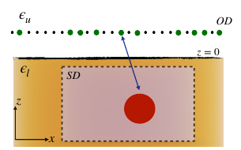
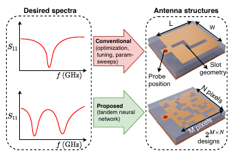
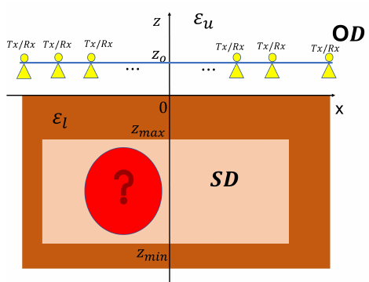
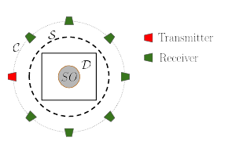
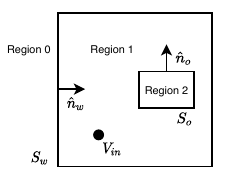
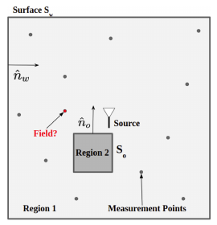

I’m a Research Associate at the Cavendish Laboratory, University of Cambridge. My research focuses on computational imaging, Bayesian inference, and inverse problems. I develop methods to reconstruct spatial and wavelength-dependent structure from sparse optical-interferometric measurements, with particular attention to uncertainty in the recovered images. Previously, I worked on electromagnetic field prediction, radar imaging, and sensor selection. I completed my M.S. and Ph.D. in Electrical Engineering at IIT Madras in 2023.
Research interests
My research focuses on computational imaging and scientific computing. I develop image-reconstruction methods that combine physical models, Bayesian inference, and machine learning to recover spatial and spectral structure from sparse, noisy measurements.
I currently work on optical-interferometric imaging at Cambridge. My broader interests include electromagnetic inverse problems, measurement optimisation, and AI-assisted scientific workflows.
Current work
- Polychromatic optical-interferometric imaging
- Bayesian inference and uncertainty quantification
- Differentiable scientific computing with JAX
- LLM agents for scientific inverse problems
Selected publications
Scholar profile6 publications · Select a figure to explore
- Imaging & sensing

Enlarge ↗Fig. 1 · Subsurface scattering geometry Subsurface Radar Imaging by Optimizing Sensor Locations in Spatio-Spectral Domains
C. Bhat, M. A. Maisto, U. K. Khankhoje, and R. Solimene · IEEE Transactions on Geoscience and Remote Sensing · 2023
- Machine learning

Enlarge ↗Fig. 1 · Conventional and neural-network antenna design Tandem Neural Network Based Design of Multiband Antennas
A. Gupta, E. A. Karahan, C. Bhat, K. Sengupta, and U. K. Khankhoje · IEEE Transactions on Antennas and Propagation · 2023
- Imaging & sensing

Enlarge ↗Fig. 1 · Subsurface radar measurement geometry An Insight into the Warping Spatial Sampling Method in Subsurface Radar Imaging and Its Experimental Validation
M. A. Maisto, C. Bhat, and R. Solimene · Remote Sensing · 2023
- Inverse imaging

Enlarge ↗Fig. 1 · Total-field imaging experiment Inverse Imaging Using Total Field Measurements
C. Bhat and U. K. Khankhoje · IEEE Geoscience and Remote Sensing Letters · 2022
- Electromagnetic fields

Enlarge ↗Fig. 2 · Scattering environment and source geometry Electromagnetic Field Imaging in Arbitrary Scattering Environments
K. Sastry, C. Bhat, R. Solimene, and U. K. Khankhoje · IEEE Transactions on Computational Imaging · 2021
- Compressive sensing

Enlarge ↗Fig. 1 · Field prediction from sparse measurements Compressive Sensing Approaches for the Prediction of Scattered Electromagnetic Fields
C. Bhat, K. Sastry, and U. K. Khankhoje · Journal of the Optical Society of America A · 2020


Conference papers
- 2026
Variational Inference-Based Polychromatic Imaging for Optical Interferometry
C. Bhat, J. Young, D. Buscher, C. Haniff, and F. Baron
SPIE Astronomical Telescopes + Instrumentation · Copenhagen, Denmark · July 2026
Oral presentation · Proceedings awaiting publication, according to the supplied publication list.
- 2024
Design Approaches for Identical Transmitter and Receivers for Long Distance OAM Communication
C. Bhat, Karthik P B, A. Goyal, and U. K. Khankhoje
IEEE AP-S / USNC-URSI · Florence, Italy
Publication record ↗ - 2023
Spatial and Frequency Measurement Optimization in Subsurface Imaging
M. A. Maisto, C. Bhat, and R. Solimene
Conference contribution · University of Campania record
Publication record ↗ - 2022
Machine Learning Based Tandem Network Approach for Antenna Design
A. Gupta, C. Bhat, E. Karahan, K. Sengupta, and U. K. Khankhoje
IEEE AP-S / USNC-URSI · Denver, USA
Publication record ↗ - 2021
Electromagnetic Field Prediction – Scattered and Total Field Approaches
C. Bhat, K. Sastry, R. Solimene, and U. K. Khankhoje
15th European Conference on Antennas and Propagation (EuCAP) · Online
Publication record ↗ - 2019
Spatial Prediction of Undersampled Electromagnetic Fields
K. Sastry, C. Bhat, and U. K. Khankhoje
PIERS · Rome, Italy
Publication record ↗ - 2018
Spatial Prediction of Electromagnetic Fields Using Few Measurements
C. Bhat, A. Gupta, R. Ganti, and U. Khankhoje
PIERS · Toyama, Japan
Best Student Paper Competition · Honorable Mention
Publication record ↗
Research software
I maintain MATLAB implementations of several of my research methods, with examples and numerical checks.
- Subsurface radar sensor optimisation
Selection of sensor positions and frequencies using a scattering operator and signal-subspace methods.
- Total-field inverse imaging
Research code accompanying work on inverse imaging using total-field measurements.
- Compressive-sensing field prediction
Code for predicting scattered electromagnetic fields from a limited set of measurements.
- OAM communication with circular arrays
Simulation of array fields, mode purity, and channel capacity for OAM radio links.
Background
- 2024–present
- Research Associate
University of Cambridge, Cavendish Laboratory - Jan–Jul 2024
- Postdoctoral Scholar
SAMEER, Kolkata - Aug–Dec 2023
- Postdoctoral Scholar
Indian Institute of Technology Madras - 2017–2023
- M.S. and Ph.D., Electrical Engineering
Indian Institute of Technology Madras - 2011–2015
- B.E., Electronics and Communications Engineering
S.D.M. College of Engineering and Technology